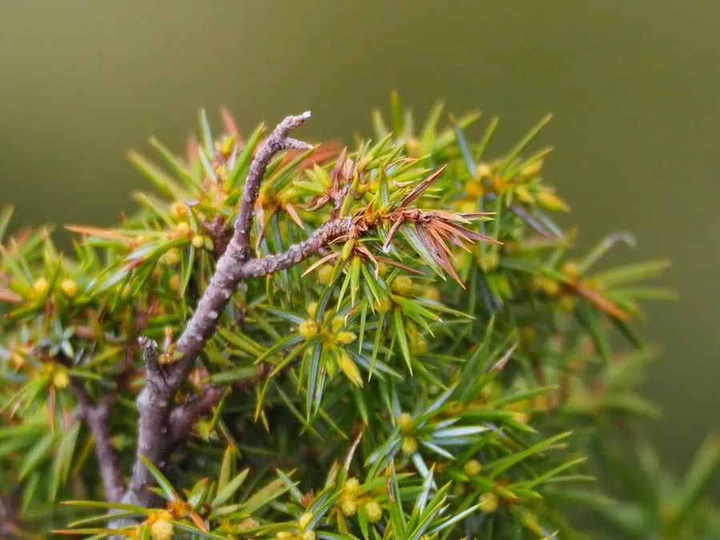

蕨类与裸子植物 · 植物界
刺柏 Juniperus formosana

刺柏的针叶三叶轮生、先端尖锐如刺，树形清秀，常作园林与盆景材料，木材芳香，是东亚常见的柏类植物。
- 分类
- 门裸子植物门纲松纲目松柏目科柏科属刺柏属
- 栖息环境
- 山坡、林缘与灌丛，喜光照充足、排水良好，耐旱耐寒
- 地理分布
- 中国长江流域及以南山地，台湾也有分布
- 保护级别
- 暂无评估；野生与栽培种群常见
物种志
刺柏是柏科常绿小乔木或灌木，高可达 8 m。树皮灰褐色、纵裂；小枝细长下垂。叶三叶轮生，线状披针形，先端尖锐如刺，叶面有两条白色气孔带，因此得名“刺柏”。雌雄同株或异株，球果浆果状，近球形，成熟时淡红褐色或蓝黑色，表面有白粉。
刺柏分布于中国长江流域及以南山地，也见于台湾，生于山坡、林缘与灌丛中，喜光照充足、排水良好的环境，耐旱、耐瘠薄、耐寒。它生长缓慢，树形清秀，枝叶芳香，是优良的园林与盆景材料；木材细密、有香气，可作器具与雕刻用材。刺柏的枝条在民间也作药用。它四季常绿、适应性强，是柏类中观赏价值较高的种类之一。
形态与习性
- 树高可达 8 m
- 叶三叶轮生，线状披针形，先端尖锐
- 球果浆果状，成熟时淡红褐或蓝黑
- 木材细密芳香，可作器具
- 用途园林与盆景材料
趣味知识
- 刺柏的叶子三叶轮生、尖端如刺，摸起来扎手，名字由此而来。
- 它的球果像小浆果，成熟时带白粉。
- 刺柏木材芳香，常被用来制作器物和盆景。